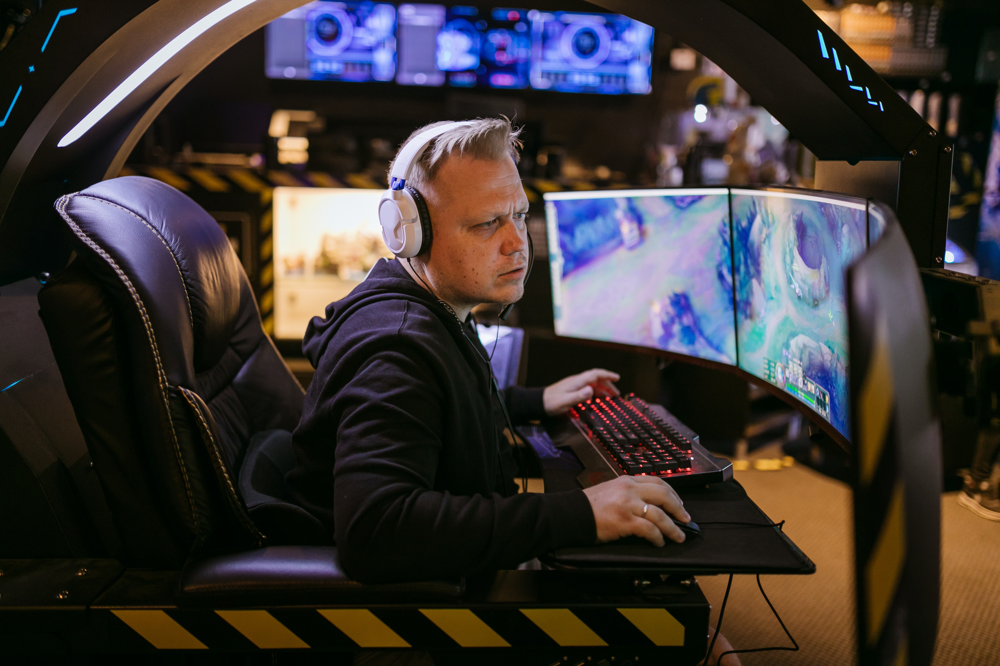
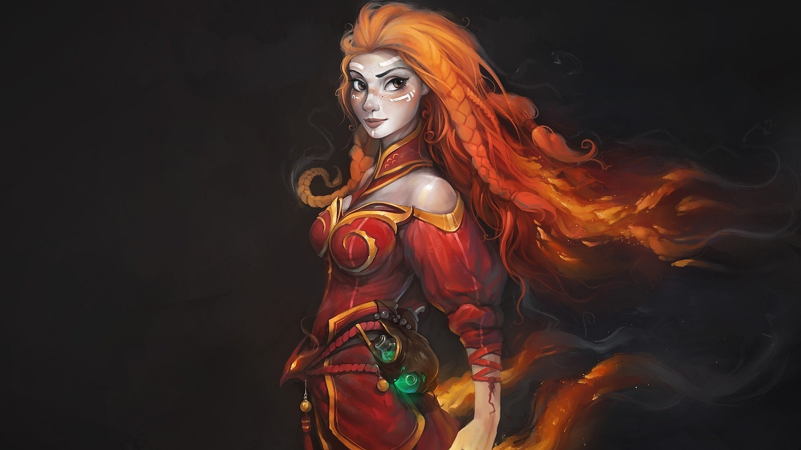
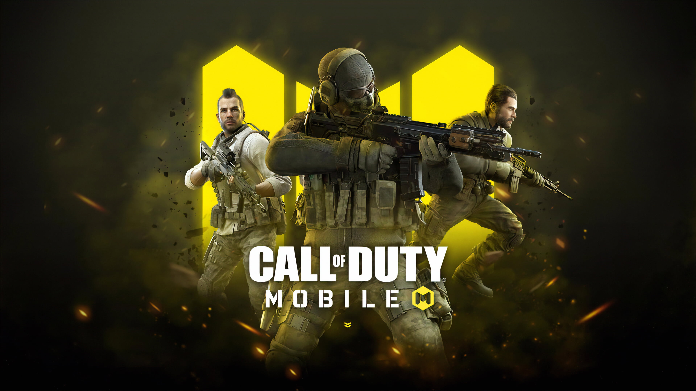
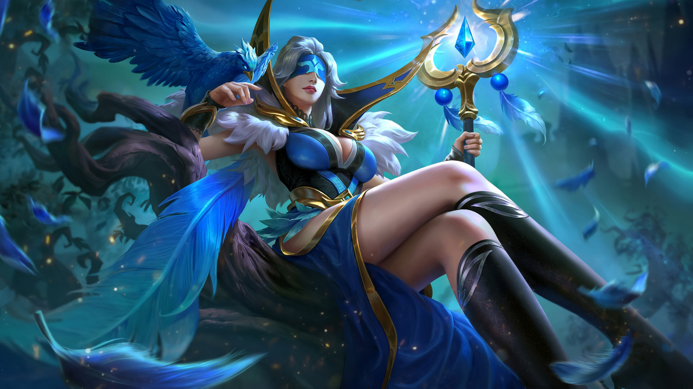

About Esports
Esports, also known as electronic sports, is a form of competitive video gaming where professional players compete against each other in organized tournaments and leagues. Esports can involve different types of video games such as; B. First person shooter, multiplayer online battle arena games, real time strategy games, fighting games and sports games. Esports has grown in popularity in recent years, with millions of fans worldwide and a growing number of professional players and teams. Esports events are often streamed online and televised, and many companies sponsor teams and events, helping to grow the industry.
History
The history of esports can be traced back to the early 1970's when the first competitive video game tournament was held at Stanford University for the game Spacewar! However, it wasn't until the 1990s that esports gained mainstream popularity, particularly in South Korea, where televised gambling competitions attracted large audiences and professional players emerged. In the early 2000s, the sport continued to grow, with the formation of organizations such as the Cyberathlete Professional League (CPL) and the Electronic Sports World Cup (ESWC). These organizations organized international tournaments for popular games like Counter-Strike and Quake III Arena with significant prize pools that caught the attention of professional players and fans alike. The mid-2000s saw the rise of multiplayer online battle arena (MOBA) games, which became the dominant genre in esports. Games like Defense of the Ancients (DotA) and League of Legends (LoL) have spawned huge competitive scenes and helped bring esports to a wider audience. Esports continued to gain momentum in the 2010s with the formation of the League of Legends Championship Series (LCS) and the Overwatch League, which introduced a franchise model similar to traditional sports leagues. Esports popularity grew exponentially with the emergence of live streaming platforms like Twitch, which allowed fans to watch live matches and interact with players and other fans in real-time. Today, esports is a multi-billion dollar...
Popular Esports Games
League of Legends
League of Legends (LoL) is a Multiplayer Online Battle Arena (MOBA) game that is developed and published by Riot Games. The game was first released in 2009 and has since grown into one of the most popular esports titles, with millions of players and fans around the world. In LoL, players control a champion with unique abilities and work together with their team to destroy the enemy team's base. The game features a variety of game modes, including the popular 5v5 Summoners Rift mode, as well as rotating game modes that offer unique gameplay experiences. LoL has a thriving esports scene with numerous professional leagues and tournaments around the world. The most prestigious event is the League of Legends World Championship, which is held annually and sees the best teams from around the world compete for a multi-million dollar prize pool. In addition to the World Championship, there are also regional leagues in North America, Europe, China, Korea and other regions, as well as international tournaments such as the Mid-Season Invitational and the All-Star Event. Professional players can generate significant income from salaries, tournament winnings and sponsorships, and many teams are owned by major sports organizations and celebrities. Overall, LoL has had a significant impact on the esports industry and remains one of the most popular and lucrative esports titles to date.
Dota 2
Dota 2 is a free-to-play multiplayer online battle arena (MOBA) game developed and published by Valve Corporation. It is the sequel to Defense of the Ancients (DotA), a community-created mod for Blizzard Entertainment's Warcraft III: Reign of Chaos. In Dota 2, players control a hero with unique abilities and work with their team to destroy the base of the enemy team. The game features multiple game modes, including the popular 5v5 Dota 2 mode, as well as custom games created by the community. Dota 2 has a thriving esports scene and the annual Dota 2 tournament "The International" is one of the most prestigious esports events. The tournament features the best teams from around the world competing for a multi-million dollar prize pool, with the winners taking home millions of dollars. In addition to The International, there are also several regional leagues and tournaments around the world, including the Dota Pro Circuit (DPC), which is a series of events that culminate in The International. Professional players can earn significant income through salaries, tournament wins and sponsorships, and many teams are owned by major sports organizations and celebrities. Overall, Dota 2 had a major impact on the eSports industry and remains one of the most popular and profitable eSports games to this day.
COD Mobile
Call of Duty: Mobile (CoD Mobile) is a free-to-play first-person shooter game for mobile devices developed by TiMi Studios and published by Activision. It was released in 2019 and is part of the popular Call of Duty franchise. CoD Mobile has several game modes such as multiplayer, battle royale and zombies. In multiplayer mode, players compete against each other in different game types such as Team Deathmatch, Domination and Search and Destroy. In Battle Royale mode, up to 100 players fight to be the last person or team standing, while in Zombies mode, players work together to survive waves of zombie attacks. CoD Mobile quickly gained popularity in the sports scene with several tournaments and leagues organized around the world. The most important tournament to date is the Call of Duty Mobile World Championship, with a prize pool of over $2 million and the best teams from around the world competing. Professional players can earn significant income through salaries, tournament wins and sponsorships, and many teams are owned by major sports organizations and celebrities. The popularity of the game continued to grow and regular updates and new content were added to keep the game fresh and attractive to players. Overall, CoD Mobile had a significant impact on the mobile eSports industry and remains one of the most popular mobile eSports games to this day.
MLBB
Mobile Legends: Bang Bang (MLBB) is a free-to-play multiplayer online battle arena (MOBA) game developed and published by Moonton. The game was first released in 2016 and has since become one of the most popular mobile games with a large player and fan following in Southeast Asia. In MLBB, players control a hero with unique abilities and work with their team to destroy the enemy team's base. The game has several game modes including Classic, Ranked and Custom. MLBB has a thriving eSports scene, hosting a number of professional leagues and tournaments around the world, especially in Southeast Asia. The most prestigious event is the annual Mobile Legends: Bang Bang World Championship, where the world's best teams compete for a multi-million dollar prize. In addition to the World Cup, there are also several regional leagues and tournaments, including MPL (Mobile Legends Professional League) in Southeast Asia, which is the most prominent professional league in the region. Professional players can earn significant income through salaries, tournament wins and sponsorships, and many teams are owned by major sports organizations and celebrities. Overall, MLBB had a significant impact on the mobile eSports industry, especially in Southeast Asia, and remains one of the most popular and profitable mobile eSports games to this day.




Top Esports Teams
Gaming. Photo credit: Riot Games
OpTic Gaming was founded in 2006 and has professional teamsin games such as Call of Duty, Counter-Strike: Global Offensive, and League of Legends. The organization has won several championships and is known for its strong presence in the Call of Duty esports scene.
FaZe Clan. Photo credit: PGL
FaZe Clan was founded in 2010 and has professional teams in games such as Call of Duty, Counter-Strike: Global Offensive, and Fortnite. The organization is known for its content creation and has many popular YouTubers and Twitch streamers among its members.
G2 Esports. Photo credit: Psyonix
G2 Esports was founded in 2013 and has professional teams in games such as League of Legends, Counter-Strike: Global Offensive, and Rocket League. The organization is known for its dominant League of Legends team, which has won multiple European championships and has competed in several international events.
Team Liquid. Photo credit: ESPAT
Team Liquid was founded in 2000 and has professional teams in games such as League of Legends, Dota 2, and Valorant. The organization has won several championships and is known for its strong presence in the North American esports scene.
Upcoming Esports Events
Legends Global Series Year
The third season of ALGS is underway. This season, the prize pool remains unchanged at $5 million. Although Split 1 saw a 30% drop in viewership, it reached over 500,000 viewers during the finals across multiple channels on both Twitch.tv and YouTube. That Split was held at the Copper Box Arena in London and introduced a new quick playoff format called Match Point. In this format, a team can only be crowned the winner if it won the game after already winning 50 points. Although this season is just getting started, Split 1 was a great display of player skill and teamwork. Team Solo Mid ended up winning the crown and taking home $300,000, with their in-game leader ImperialHal winning tournament MVP.
The International 2023
The International 2023 is the final tournament of the current season of the Dota Pro Circuit and the twelfth year of The International. The invitational format is similar to the previous International, where teams invited to the International are determined based on a points system based on official sponsored regional leagues and important competitions.
Valorant Champions Tour 2023
The VCT EMEA League kicked off the regular season on March 27, with ten teams competing in a round-robin stage, with each match in a best-of-three format. Games are played on Wednesdays, Thursdays and Fridays, with the exception of early Super Week.Only six teams from the regular season make it to the double playoffs. Finally, the top four teams from the VCT EMEA League will qualify for VCT Masters Tokyo and the top three will qualify for Valorant Champions 2023. There will also be a Last Chance Qualifier in July, giving teams another chance to secure a place in Valorant Champions.
League of Legends Worlds Championships 2023
Worlds 2023 is the conclusion of the 2023 League of Legends esports season. The tournament will be played in South Korea. In 2023, the tournament saw major format changes from previous years, including a best-of-three, Swiss-style stage and more.